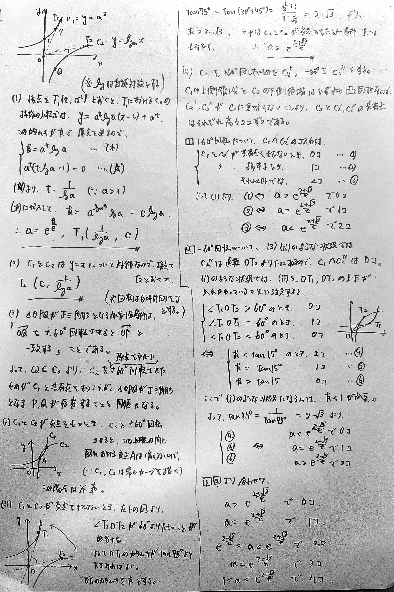

東大理系数学 2004-1
$xy$平面の放物線 $y=x^2$ 上の3点 P, Q, R が次の条件をみたしている。
△PQR は一辺の長さ $a$ の正三角形であり、点 P, Q を通る直線の傾きは $\sqrt{2}$ である。
このとき、$a$ の値を求めよ。
解答例
正三角形絡みの問題は様々な戦略がありますが、今回は対称性を鑑みて「中線の先に最後の点がある」と言う条件で立式しました。
傾きの条件は、「$y=kx^2$上の2点を通る直線の傾きは$k(p+q)$」という、高校入試ではおなじみの式を知っていると迷わず文字で置けるかと思います。
＞$P,Q,R$が本当にこの順に並ぶのかどうかは、もう少し丁寧に書いた方が良かったかもしれません。
＞また、ベクトルの90°回転が「要素を入れ替えて、片方を-1倍する」ことで実現できるというのもまた、説明が必要かもしれません。
図解
$P$を動かして、$R$が放物線上に来るようにする...というイメージです
問題の背景
解答例でも述べたように、正三角形をなす必要十分条件は様々なものがあります。以下に有名なものを並べてみます。
相異なる3点$A,B,C$が正三角形をなす
（※外心、重心、内心、垂心をそれぞれ$O,G,I,H$とする）
⇔ $\angle ABC=\angle BCA=\angle CAB$ （3角相等）
⇔ $AB=BC=CA$ （3辺相等）
⇔ $\overrightarrow{AB}$が$\overrightarrow{AC}$を$\pm 60$°回転させたベクトルである
⇔ $\overrightarrow{AB}\cdot\overrightarrow{AC}=\frac12|\overrightarrow{AB}|^2=\frac12|\overrightarrow{AC}|^2$
⇔ $M$を$AB$の中点としたとき、$\overrightarrow{MC}$は$\overrightarrow{AB}$に垂直で、大きさが$\frac{\sqrt3}{2}$倍である
⇔ $\angle AOB=\angle BOC=\angle COA$ （外心からみて、頂点が互いに120°をなしている）
⇔ $O,G,I,H$のうちいずれかが一致する
⇔ 内接円、外接円の半径をそれぞれ$r,R$としたとき、$R=2r$（オイラーの不等式の等号成立条件）
探せばまだまだありますが($|\triangle ABC|=\frac{\sqrt3}{4}\max{\{AB,BC,CA}\}^2$など)、いったんこの程度にしておきます。
私としては、$A,B,C$が座標で与えられるときは角度条件が忌避され、複素数で与えられるときは3辺相等or角度条件が刺さると思っています。
また、座標で3辺相等の式を立てると連立2次方程式になり計算量が増えがちなので、これも避けることが多いです。（一番確実に解ける保証はあるけども...）
このような使い分けは、実践を通して身につけていくものだと思うので、下の類題に是非挑戦してみてください。
類題紹介
線分$PQ$が円$C$に内接する正三角形の1辺となるとき、実数$k$の値を求めよ。
（南山大2011抜粋）
$A,B,C$が正三角形の頂点になるとき、$z^2$の値を全て求めよ。
（名古屋工大2019抜粋）
$D_1:(x-3)^2+y^2\le 1,$
$D_2:x^2+(y-\sqrt{3})^2\le 1$
を考える。
直線 $y=-x$ 上の点 $P(a,-a)$ に対して，次の条件を満たすような $a$ の範囲を求めよ。
条件：領域 $D_1$ の点 $Q$ と領域 $D_2$ の点 $R$ で，3点 $P,Q,R$ が正三角形をなすものが存在する。
（東大模試）
$p$：$z_1,z_2,z_3$ を頂点とする三角形が正三角形である $q$：$z_1+z_2+z_3=0$
（上智大2019）
(p⇒q)【外心からみた頂点】$z_1,z_2,z_3$を極座標で置き、和=0を示す
(q⇒p)【3辺相等】 $z_3$のみ移項して、両辺の絶対値を2乗。3点の距離が互いに等しいことを示す
(1) $O$ を通る傾き $k$ の直線が $C_1$ に接するとき，$a$ の値を $k$ を用いて表せ。また，接点の座標を $a$ を用いて表せ。
(2) $O$ を通る直線が $C_2$ に接するとき，接点の座標を $a$ を用いて表せ。
(3) $\triangle OPQ$ が正三角形となるような $P,Q$ の組の個数を，$a$ の値で場合分けして求めよ。
（科学大医療系2025）
